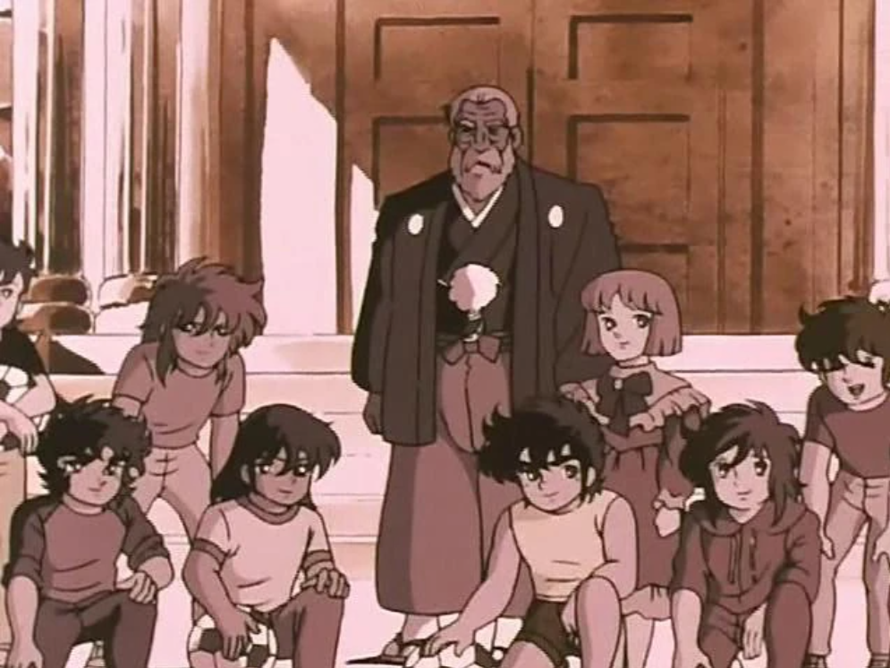
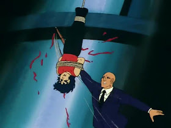
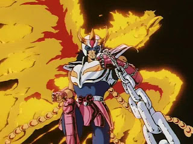
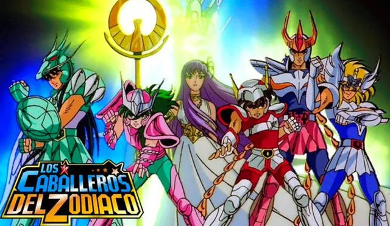
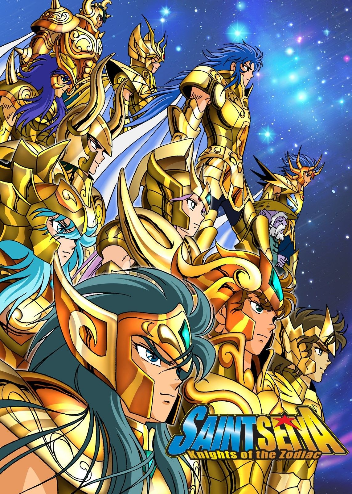

¿De que trata?
El protagonista Seiya es huerfano con una hermana mayor a la edad de 6 años es separado de su hermana por el señor Kido una persona mayor de mucho poder y plata que quiere convertir a Seiya junto a otros niños en caballeros
El protagonista Seiya es huerfano con una hermana mayor a la edad de 6 años es separado de su hermana por el señor Kido una persona mayor de mucho poder y plata que quiere convertir a Seiya junto a otros niños en caballeros
Clic Aquí por si quieren ver unas imagenes si se quiere saber mas existe un famdom que tiene mucha informacion. La serie esta en Crunchyroll, Prime Video y otros.
Seiya un niño huérfano con una hermana mayor, es elegido para caballero por el señor Kido (sin tener opciones), entrena junto a otros niños del mismo orfanato. El señor Kido tiene una nieta adoptiva, Saori Kido ella es la reencarnación de Atena quien de pequeña es egoísta, pero en cuanto pase el tiempo madurará pero de pequeña molestaba a los chicos usando su posición como nieta, ella tiene unos 5 a 6 años es unos 2 años menor que el protagonista Seiya. Aun así el protagonista nunca se deja maltratar por ella, mientras tanto en esos años de entrenamientos conoce a otros de los niños huérfanos que están siendo entrenados Hyoga: pelo dorado con carácter frío; Shun: pelo verde, tiene un hermano mayor, es más débil que los demás y tímido; Ikki: pelo azul oscuro, hermano mayor de Shun, es más fuerte con un carácter competitivo y protector con su hermano; Shiryu: Pelo verde marino oscuro largo, es más calmado y también fuerte.  Comenzamos por el inicio el señor Kido se lleva a unos niños de un orfanato y entrenan muy duro. Su trabajador Tatsumi en lo que pienso creo que es muy rudo sobre todo con Ikki, Seiya dijo que lo azoto tanto que lo dejo más muerto que vivo… La primera vez que la vi no le preste tanta atención, pero habiendo visto unas veces más la escena digamos que mi vista sobre Tatsumi cambio a dejarme con un poquito de molestia.  Años más tardes los chicos son enviados a su nuevo lugar, cabe resaltar que Shun es enviado al peor lugar para entrenar conocido porque los que van allí no vuelven iguales, un pedazo del infierno en tierra, pero Ikki quiere intercambiar lugar con su hermano y gracias al señor Kido lo logra porque por Tatsumi no hubiera podido. Para entrenar, me dio tristeza tanto por Seiya como por Shun ambos se separan de sus únicos parientes. "El torneo de las Galaxias" Avanzaremos a este punto de la saga en este punto ya se enfrentaron al caballero de medusa y Shiryu tiene los ojos heridos por eso. Aioria de Leo intento matar a Seiya, pero la armadura de su difunto hermano Aioros lo protege al final casi que mata a Seiya, pero Saori le cuenta que hace 13 años un caballero la salvo de Arles el patriarca cuando la quería matar cuando era una bebe y fue salvada por Aioros quien dio su vida y al final dejo a la joven Atenea en su lecho de muerte al señor Kido diciéndole la gran misión de esa bebe y que ella no lo ve como un traidor, en cambio, fue su salvador. Atena decide dejar que él la ataque para probar que es Atena y él acepta un poco dudoso, pero Seiya para su cápsula de energía con sus manos lo que asombra a todos, ya que ese ataque es muy rápido y pronuncia las palabras "Prueba o no prueba esto no se le hace a una mujer" al final el alma de Aioros le dice de muchas formas que es un estúpido por levantar sus puños contra Atenea y él le jura lealtad y vuelve al santuario (si ven el cap pueden ver que le dice "acaso no puedes verlo Aioria?" hermano, parece que no ves la diferencia entre el bien y el mal, y te llamas a ti mismo un caballero, Es tu mismo hermano el que te habla! como te atreviste a levantar tus puños en contra de la misma atenea? !Eres un estupido!") 1,1. Seiya vs. Geki (Caballero de la Osa Mayor) en este encuentro Geki usa sus brazos para ahorcar a Seiya casi lo logra, pero Seiya es más fuerte y se los parte. 1,2. Hyoga vs. Ichi (Caballero de Hidra) me gusto mucho la introducción del personaje de Hyoga, a pesar de que yo pensé que lo había logrado envenenar pero en relidad el veneno del otro nunca lo toco, Hyoga uso su hielo como protección, y al final termino como ganador y puedo decir y con diferencia. Ichi con su veneno me parece un oponente fuerte, pero al tocarle con Hyoga quedo en desventaja y perdió. 1,2. Seiya vs. Shiryu (Caballero de Dragón) Okay! Esta fue una batalla impresionante donde mostraron que ambos son muy buenos les daré un poco de información de cada uno, Shiryu entreno en la cascadas del rozan con su maestro Doko, caballero de oro, piel morada es pequeño barba blanca y tiene unos 261 años, Seiya entreno con Marín quien creí que era su hermana perdida, pero no… No era, Marin, un caballero de plata es una mujer, respetada en el santuario, y sí, Seiya entreno en el mismísimo Santuario en Grecia. Volvamos a la batalla, después de varios golpes Seiya encuentra el punto débil de Shiryu y le golpea, sin embargo, este golpe hace que se le pare el corazón, cabe resaltar que estas peleas de ellos tienen esos riesgos, se lo llevan de emergencia, pero Shunrei amiga íntima de Shiryu le dice que solo un golpe igual que el de antes podría salvarlo, Seiya quien estaba bastante herido pone todo su esfuerzo en ese golpe mientras Shun sostiene al cuerpo de Shiryu Seiya hace el golpe, Shun sale en contra de la pared (que poder, con razón se le paró el corazón ._.) y Shiryu sobrevive después de esto Seiya y Shiryu son internados y comienza una confianza y agradecimiento de parte de Shiryu, pero mientras Shiryu visito a Shiryu en el hospital menciona que alguien los miraba, una persona entre toda la gente, y no le gustaba, quiero resaltar que esto resalta las aptitudes del caballero del dragón personaje que me agrada mucho por su calma y madurez he visto unos animes más y me encanta la amistad del "Energético" y el que lo detiene o lo calma o sea Seiya y Shiryu. 1,3. Shun vs. Jabu (Caballero de Hidra) Jabu tenía demasiada confianza en sí mismo aunque creo que ya hace parte de su personalidad ahora lo importante es Shun él tiene una cadena esta ataca y defiende debo de admitir que es una arma muy potente, pero teniendo esto en cuenta quienes la rompan son mucho más fuertes por eso el entrenamiento Shun no puede depender de su cadena. En este combate no hay ganador en breve la cadena comienza a comportarse extrañamente Hyoga, Seiya y Shiryu suben al lugar de combate a ver que intenta decir la cadena, a ver voy a explicarme; la cadena de Andrómeda no solo con poder de ataque y defensa de 10000 voltios si el oponente la toca, pero también tiene otro poder en el que es detectar enemigos a la vez tiene capacidad de moverse por sí sola, Bueno teniendo esto en cuenta sigamos, La cadena en medio del combate se mueve sola y escribe "Axia" ninguno de los que estaba allí sabía que era, de pronto comienza aún más brusco y apunta a la armadura de oro de sagitario y Shun exclama que "Axia" es importante de pronto de la armadura sale Ikki la cadena sigue hostil, pero la gente celebra su llegada y lo ponen a combatir contra su contrincante porque "solo había llegado tarde" pues no, él gana y no solo eso quiere robarse la armadura de oro. La venganza de Ikki: Ikki robo la armadura de Sagitario por eso la cadena de Andrómeda estaba en su contra Ikki tenía malas intenciones, voy a resumir porque si sigo no podre hablar del resto, Ikki se roba la armadura y se la pone, es el primer caballero de bronce en poner esto, pero a lo largo de la serie nos dice que las armaduras tienen pensamientos en el caso de la armadura de sagitario nos hablan de que Aioros (muerto) controla la armadura o sea que podemos pensar esto ¿Aioros vio que Ikki no era tan malo? No tengo respuesta, okay sigamos, Ikki se la roba se la pone Seiya lo encuentra le logra robar parte de la armadura persiguen a Ikki para encontrar el resto Ikki no venía solo él tenía a los caballeros negros quienes tienen unas armaduras de Cisne, Pegaso, Dragón y Andrómeda, pero oscuras ellos se ven físicamente parecidos a los caballeros de bronce, ahora cada uno se enfrenta a su debido tiempo a su "doble" y logran ganar y llegar a donde Ikki ellos pelean están por perder, pero Seiya se levanta y las armaduras de los otros caballeros de bronce responde a su perseverancia y Seiya usa una parte de cada armadura de sus amigos ganando a Ikki más que físicamente también conecta con él emocionalmente haciendo que al final reconozca a su hermano Shun y se arrepienta después Alguien enviado del santuario los encuentra los ataca y en eso Ikki muere. Vamos a dejar algo claro para los que no se han visto la serie, Armaduras: Seiya Pegaso, Shun Andrómeda, Shiryu Dragón, Hyoga Cisne. El santuario es el lugar donde está Atena, es la capital de los caballeros ubicada en Grecia; sin embargo, sabemos que Saori es Atena, entonces ¿Quién está al mando del santuario? Sigan leyendo.  Los caballeros de bronce (Seiya, Shiryu Shun y Hyoga) se dirigen al santuario en un helicóptero de la empresa de la señorita Kido (Atenea) Pero Shun se retrasa porque sus excompañeros de entrenamiento lo vienen a detener por orden del santuario, aquí quiero resaltar a alguien el maestro de Shun, Contexto: Shun entreno en una isla y esa isla fue acabada por Milo de escorpio un caballero dorado porque el maestro de Shun jefe de la isla no quería hacer lo que dice el santuario porque él sospechaba que había algo raro, él se enfrentó al mismísimo Milo llevando un empate ¡esto es sorprendente él era alguien de plata igualando a uno de oro! Pero llega Afrodita de Piscis y lo mata por la espalda... Creo que el maestro podría haber ha sido un gran aliado, pero lastimosamente murió allí... Ok, sigamos, Shun gana la batalla y se dirige con sus amigos al santuario.  Las 12 casas Voy a resumir mucho..  Llegan al santuario y Saori es atravezada con una flecha dorada y tiene 12 horas de vida exepto que lleguen al final de las casas y encuentren el escudo de Atenea y ella sea alumbrada con su luz Aries: Comienzan en la casa de Mu de Aries, no lo mencione pero Shiryu ya conocia a Mu y él estaba de parte de ellos, Mu les cura las armaduras (esto dura 1 hora) Tauro: en donde se enfrentan a Aldebaran quien siempre tiene una postura de brazos cruzados ellos se le enfrentan pero no logran nada, despues Seiya recuerda "que una espada desenvainada es una espada muerta" (Moraleja: una espada desenvainada esta muerta, no te puede hacer daño 🍷🗿) la cosa es que Seiya rompe la postura de aldebaran y logra cortarle un cuerno de su armadura, Aldebaran acepta su derrota y los deja pasar y les advierte que tienen que despertar el 7mo sentido. Casa de Géminis: ellos 4 entran, pero además de cambiar de color el lugar entre negros y blancos terminan saliendo por la entrada, lo intentas una vez más y salen y hay dos templos, así que se dividen en 2 grupos Por un lado, Shiryu y Seiya por otro, Hyoga y Shun Después de correr un tiempo ambos equipos se encontraron con una armadura de oro de Géminis portadas por una sombra, sin embargo, Shiryu le dice a Seiya que no siente ninguna presencia por lo que corren atravesando la armadura y la pared saliendo de la casa de géminis, pero significa que Hyoga y Shun están frente el real, pero como prometieron siguieron adelante Hyoga y Shun se enfrentan a Géminis todos los ataque que Hyoga lanzaba se le devolvían y las cadenas de Shun no reaccionaban así que concluyeron que alguien controla la armadura Shunn hace su ataque Nebula de Andrómeda que es que la cadena crea círculos alrededor de su portador protegiéndolo y reta a la armadura a atacarlo de frente, pero aunque pisara las cadenas esto no sirvió de nada y la armadura ataca con "Otra dimensión" Hyoga es absorbido por el ataque pero Shun con sus cadenas se agarra de una de las columnas de la casa para evitar el ataque algo interfiere con el ataque, No es Atena, No son los caballeros dorados, (nop no era ninguno de ellos) era Ikki aun así Shun no huye, Shun logra usar su onda trueno y uno de los extremos de su cadena logra atravesar la sombra y aparece donde en patriarca y le rompe su collar y el Patriarca tiene una discusión consigo mismo con dos personalidades distintas y al final deja de hacer la ilusión y Shun logra salir de la casa de Géminis ¿Y Hyoga? ¿Qué paso con él donde está? No apareció donde vencieron a Shun, resulta que fue enviado a la casa de libra donde se encuentra a Camus de Acuario, quien lo ataca, pero Hyoga no quiere atacar a su maestro así que Camus lanza un ataque que viaja hasta un barco hundido en los mares de Siberia donde se encontraba el cuerpo de la madre de Hyoga y lo hunde a muy al fondo, Hyoga visitaba a su madre dejándole rosas, o sea nadaba al fondo en el mar frío y le dejaba una rosa y volvía a la superficie, esto enfurece a Hyoga y ataca, pero Camus anula su ataque al final Camus hace su ataque Ejecución de Aurora y lo congela él dice que lo dejo en un ataúd de hielo, pero él no lo mató porque recuerda momentos con su pupilo y prefirió encerrarlo en un ataúd de hielo y que ningún caballero ni siquiera los de oro pudieran romperlo y se va entre lágrimas.. Cancer: Ahora Seiya y Shiryu llegan a Cáncer, Shiryu se queda a pelear y le dice a Seiya que se adelante, adelante de ellos aparece Deathmask un caballero puede controlar las almas y viajar al más allá también, no al inframundo específicamente sino el camino donde después las almas caen al inframundo, pero sigamos, Deathmask les dice que ellos formaran a su colección de rostros o sea personas que mato ellos ven caras en las paredes y él las dejó allí para que no pudieran ir al cielo, entre esos hay niños, mujeres y hombres Deathmask se excusa diciendo que se los encontraba mientras perseguía al enemigo tanto Seiya como Shiryu se enojan, pero Shiryu le recalca a Seiya que se vaya, él lo hace, Shiryu y Deathmask se enfrentan y Deathmask lo transporta a la colina Yomotsu o sea una parte del inframundo superficial, Shiryu recupera la vista en ese lugar y ve a Hyoga entre esas almas que se dirigen al inframundo y Atena le advierte que estas almas van al inframundo y manda al alma de Shiryu de vuelta a su cuerpo, Deathmask se sorprende de que volviera a su cuerpo, Shunrei quien oraba por Shiryu Deathmask describe que lo puede sentir y que le parece repugnante, vuelven a las colinas Yomtsu ambos y se enfrentan allí Deathask está a punto de tirar a Shiryu al inframundo, pero escucha los rezos de Shunrei y con sus poderes telepáticos la empuja a la cascada, Shiryu se molesta y menciona su odio y lo ataca varias veces muy furioso (Uyyyy) pero Death mask lo vuelve a vencer y esta vez lo tira, pero Shiryu no se ha rendido! Se agarra con su mano del borde, pero Deathmask se dispone a tirarlo ahora las almas que Deathmask mató llegan para molestarlo, pero él se la quita, Deathmask le había dicho orgulloso que con una armadura Dorada no podría en contra de él, Deathmask le pisa la mano, pero Shiryu no se suelta y, en cambio, le ataca y la armadura de oro de cáncer abandona a Deathmaskporque ya no lo considera digno, Shiryu para ser justo se quita la armadura también y le gana a Deathmask tirándolo al inframundo. Leo: Seiya llega a donde Aioria de Leo y este en vez de reconocerlo evita que pase (por el puño fantasma de patriarca) (resumiré más porque esto está muy largo) intercambian ataque en los que Aiora demuestra tener ventaja justo cuando Aioria se disponia a matar a Seiya Cassios entra y le dice a Seiya que se vaya que Aioria solo necesita matar a alguien para detener el control, Aioria mata a Cassios y el control del puño fantasma desaparece. Virgo: Shiryu y Shun alcanzan a Seiya y van a virgo, y se encuentran a Shaka (el caballero más cercano a Dios) quien estaba con los ojos cerrados todo el tiempo Shaka vence a Seiya de una forma fácil, Shiryu lo ataca, pero Shaka rompe su brazo, Seguidamente Shun lo ataca, pero Shaka usa su Kan cuál hace que la cadena se devuelva y ataque a Shun ahorcándolo Shun cae, pero sigue vivo después Shaka ataca otra vez y los 3 son derribados decide matar a Shun, ya que sigue consciente, pero Ikki lo detiene con una pluma con las gotas que caen se forma un río Shaka le ofrece salvarse si lo venera, pero Ikki no lo hace Shaka le dice que ha madurado o sea que se conocen y Shaka desbloquea a unas memorias en las que Shaka le causo miedo a Ikki cuando recién llego a la isla de la muerte los recuerdos vuelve a darle miedo y Shaka le ofrece 6 mundos en los que caer después de muerto, pero Ikki cae Shaka supone que se cayó en alguno de ellos, pero Ikki estaba vivo y le ataca con un puño fantasmal o sea ver tus miedos, pero Shaka lo revierte a Ikki (🔂) pero Ikki logra volver en sí en eso Shaka le quiebra toda la armadura Shaka vuelve a atacar y ambos están en la mano de Buda, pero Ikki se recuperó y vuelve a tener su armadura (de allí el Fénix) Shaka usa su ataque tesoro del cielo quitándole los 5 sentidos despues Shaka intenta atacarlo, pero Ikki lo para con su sexto sentido y Shaka procede a quitarle su sexto sentido Ikki comienza a hablar mentalmente con Shaka le pregunta ¿como un caballero cercano a Dios si sabe que el patriarca es malo sigue apoyandolo? él le responde que vio en el fondo bondad en el patriarca cuando Shaka está a punto de parar su corazón, pero Ikki consigue el séptimo sentido y el cosmo de Ikki se eleva cubriendo toda la casa de virgo Shaka se sorprende y dice que Ikki lo ha superado, rápidamente Ikki lo agarra por la espalda y sigue subiendo su cosmo con el fin de que ambos exploten mientras los otros caballeros de bronce siguen a la siguiente casa gracias al sacrificio de Ikki, al final no explotan quedan en un espacio-tiempo atrapados y aunque Shaka puede salir Ikki le hizo cambiar su forma de pensar y le pide a Mu que los saque a ambos Libra: Llegan al templo de Libra cual pertenece a Doko el maestro de Shiryu pero ven el ataud de hielo y Shiryu es llamado por la armadura de oro de Libra y logra cortar el hielo con una de las armas de Libra sacando a Hyoga pero él esta muy frio Shun les dice que se adelanten el con su cosmo calentara a Hyoga Escorpio: Shiryu y Seiya llegan a Escorpio pero quieren devolverse porque para salvar a Hyoga Shun debera morir , pero son detenidos por Milo de Escorpio (Sí el mismo que peleó al maestro de Shun 😤 ) pero Milo los paraliza Shiryu intenta atacarlo pero no sirve Milo lo reta que lo intente denuevo Shiryu lo hace y Milo lo para y con la misma fuerza empuja a Shiryu contra el techo Seiya le ataca tambien con meteoros de Pegaso y Milo los para casi todos uno le roza la cara cortandola, Milo se da cuenta que Seiya esta aprendiendo el Septimo sentido, Seiya intenta atacar otra vez pero Milo le gana y usa aguja escarlata pero llegan Hyoga y Shun Hyoga les dice que Shun esta vivo y que se vayan que él peleara con Milo, ellos aceptan y se van, Hyoga lo ataca con hielo y lo congela pero rapidamente Milo rompe el hielo y le ataca varias veces con la Aguja escarlata en los puntos de su contelacion cuales se encuentran en su cuerpo despues Hyoga comienza a desangrarse por esos puntos en los que Milo le golpeó, Milo le dice que su ataque es un ataque fatal aun asi Hyoga no se rinde y aunque varias veces es golpeado sigue peleando en uno de esos ataque le lanza un Polvo de Diamante pero Milo lo golpea lejos cuando se da cuenta tiene su armadura congelada y dice que sin la armadura ya estaria muerto y menciona que puede estar vivo pero que no gano, Hyoga intenta levantarse auque Milo lo daba por muerto Milo le golpea en el punto vital osea para la hemorragia salvando a Hyoga, la perseverancia de Hyoga hicieron a Milo cambiar de bando. Sagitario: Llegan a Sagitario extemplo de Aioros se supone que nadie la esta cuidando pero la armadura de Sagitario parece que que va a atacar y lanza un flecha pero en realidad una prueba de Aioros y ellos ven el la pared un testamento de Aioros y a todos les conmueve la devocion de este caballero Capricornio: al llegar Shiryu decide quedarse y pelear, Shura de capricornio podía cortar lo que quisiera usando su brazo derecho como espada, Shiryu intenta hacer el dragón ascendente, pero rápidamente Shura encuentra el mismo punto débil que Seiya en su pelea en contra Shiryu, el corazón y atraviesa la piel hiriéndolo de gravedad entonces Shiryu usando una técnica prohibida agarra a Shura desde la espalda y hace el último dragón esto los eleva con mucha fuerza lo que hace que la fricción los vaya lastimando y se elevan en el cielo Shura le advierte a Shiryu que morirá porque no tiene armadura Shiryu está dispuesto a eso porque él es un verdadero caballero y servirá a Atena Shura decide darle su armadura a Shiryu y empujarlo a tierra para que se salve y también transfiere su poder al brazo derecho a Shiryu. Acuario: Otra vez se enfrentan estudiante y maestro Camus y Hyoga mientras Shun y Seiya se adelantan. Camus vuelve a mostrar ventaja sobre la batalla en la que para el polvo de diamantes con una mano más adelante Usa la exclamación de Aurora en contra de Hyoga volviéndolo a congelar en un Ataúd, pero Hyoga lo rompe desde dentro y decide atacar otra vez sin suerte aun después de esta feroz batalla sigue luchando Hyoga, Camus se pone en postura para hacer la exclamación de Aurora y Hyoga se dispone a hacerla también sorprendiendo a Camus y ambos la hacen al mismo tiempo Igualados, pero Hyoga baja aún más la temperatura ganándole a su maestro y congelándolo pero ambos mueren. Piscis: Afrodita de Piscis otro caballero de oro Shun decide enfrentarlo y le dice a Seiya que siga hacia la casa del Patriarca, ambos pelean y varias veces Afrodita logra evitar o parar los ataques de Shun en uno de los ataques de Afrodita fue unas rosas piraña que no solo detuvo el ataque de Shun, sino que rompió toda su armadura, pero Shun siguió en pie para la batalla y usa su máximo ataque Tormenta nebular ataque que logra alcanzar a Afrodita y paralizarlo Shun le ofrece que se rinda y jure lealtad a Atenea y perdón por su maestro, pero, en cambio, él había estado acumulando poder para su rosa sangrienta la cual él logra lanzar a Shun y darle en el blanco su rosa blanca se torna roja poco a poco y explica que es una rosa que absorbe la sangre Shun aumenta el poder de su tormenta nebular cuál era la que estaba alrededor de Afrodita y al finalambos mueren. camino de rosas: Seiya está intentando llegar a donde el Patriarca, pero el camino está cubierto de rosas estas rosas están envenenadas y su polen es venenoso mientras Seiya sigue intentando subiendo cada vez perdiendo la conciencia poco a poco, pero Marin llega y le pone su máscara y lo ayuda a caminar le dice que su máscara evitara que el polen lo envenene después Seiya usa meteoros de pegaso y despeja el camino. Patriarca: Al llegar el Patriarca se quita la máscara y se descubre que es nada más ni menos que el propio caballero Saga de Géminis quien se creía perdido, la personalidad buena tiene el control de saga en ese momento y le explica triste que él no puede salvar a Athenea, pero que sí el escudo de Atenea, pero saga sufre un cambio de personalidad a su personalidad mala y este ataca a Seiya, él le dice que lo que quiere es el cetro de Saori y el escudo y que con ellos se podría enfrentar a los otros dioses y la armadura de Géminis llega a él y se ensambla automáticamente en Saga este intenta hacer su ataque a Otra dimensión, pero su personalidad buena lo evita Seiya aprovecha y ataca con sus meteoros y estos lo derriban, pero Saga se levanta y lo golpea, Seiya otra vez lo ataca con otro ataque, pero Saga vuelve a salir sin heridas cuando Saga va a atacar a Seiya y las caras de la máscara de su armadura comienzan a llorar y ataca a Seiya después Ikki se despierta en la casa de virgo y va hacia el Patriarca, Ikki llega a donde el Patriarca y Seiya está muy malherido, Ikki se enfrenta contra el patriarca un enfrentamiento de puños de ilusiones que queda en un empate, Saga lo envía a otra dimensión, pero Ikki siempre vuelve, Saga se dispone a eliminarlo definitivamente Con su explosión de Galaxia y lo logra.. Seiya también es atacado por la explosión de Galaxias, pero que da vivo por poco, pero al borde de la muerte el cosmo de sus amigos Jabu, Ichi y sus otros amigos que le dan fuerzas desde lejos y desata su poder de su séptimo sentido puño Cometa de Pegaso que son muchos cometas de pegaso en su puño aumentando su poder que acaba con la parte mala de saga (👏👏) él con todas sus fuerzas ilumina a Atena con el escudo de La estatua de Atena logrando salvarla, después llegan todos a la casa del patriarca los caballeros dorados Atena están presentes. Saga se disculpa con Atenea por su pecado y decide matarse con el báculo de Atenea a tristeza de ella, ya que ella no quería que el muriera.